Importación de archivos con formato definible
Podés importar archivos de comprobantes (cuyos datos estén separados por algún caracter), definir su contenido, asignar cuentas contables y, finalmente, generar los asientos de forma automática.
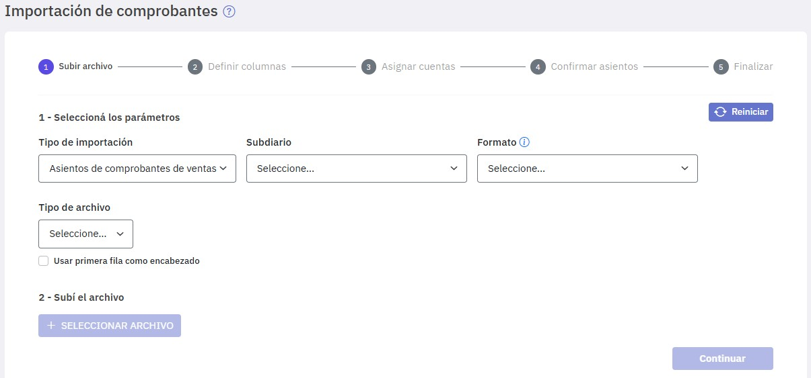
Completá:
Seleccioná los parámetros:
-
Tipo de importación : Asientos de comprobantes de ventas. -
Subdiario -
Formato : Dejalo en blanco para definir un nuevo formato desde cero. -
Tipo de archivo :Seleccioná "Delimitado" (es el único valor disponible). -
Separador : Seleccioná el caracter que separa los datos en el archivo. Si no está en la lista que se ofrece seleccioná "Otro" e indicalo en el campo del mismo nombre. -
Usar primera fila como encabezado : Tildalo si tu archivo incluye una primera línea con los títulos de los datos. -
Definí el código de cliente : Si aun no definiste una máscara para la codificación de clientes/proveedores, tenés que crearla en este paso para poder continuar. El motivo es que al importar comprobantes, los clientes deben registrarse en Easysoft y para ello debe estar definida la máscara. Para crearla presioná "Crear código"; podes consultar los detalles de cómo hacerlo en Código de clientes y proveedores. Si ya habías definido una máscara, no aparecen ni el texto ni el botón “Crear código”.
Ya estás en condiciones de subir el archivo y definir sus columnas.
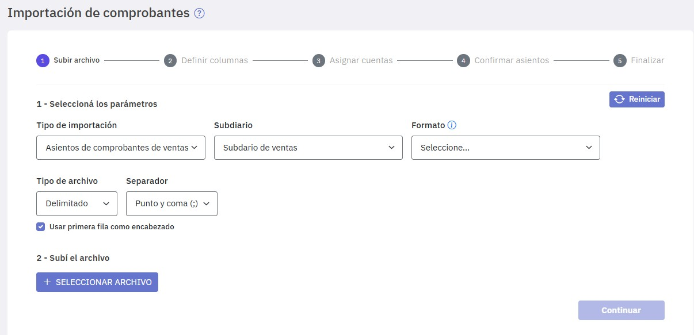
Subí el archivo:
-
Seleccionar archivo : Presioná el botón "Seleccionar archivo" y elegí el archivo a importar.
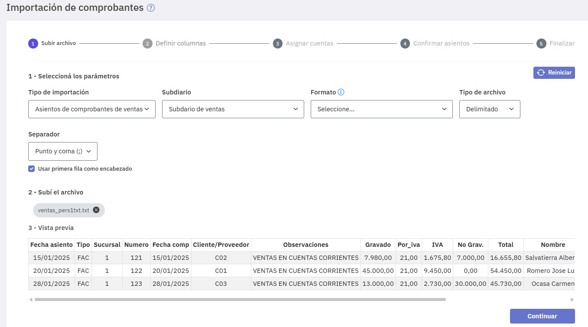
En la "Vista previa" se precargan las líneas del archivo, ahora tenés que definir un formato que describa cada una de las columnas del mismo, presioná "Continuar".
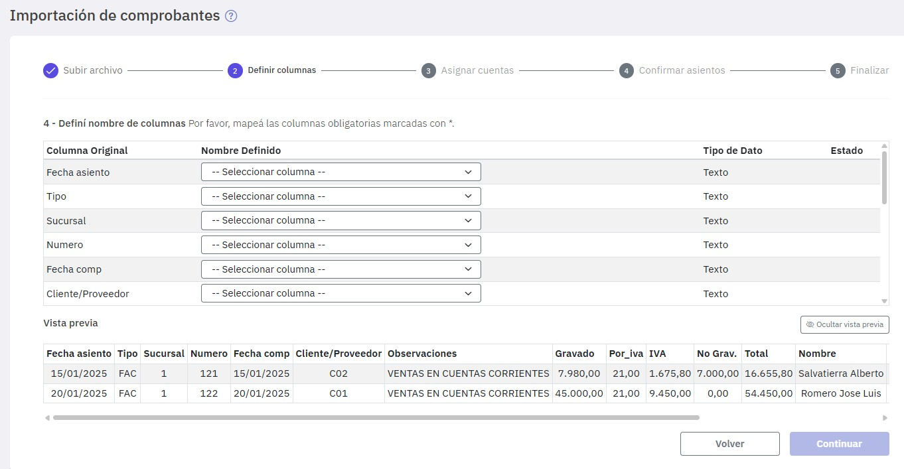
Como ves, en esta etapa se habilitan las columnas para su selección; el tipo de dato está deshabilitado, ya que está determinado por la columna a la cual corresponde. Por ejemplo, la columna ” fecha de Comprobante” siempre será de tipo "Fecha", los importes siempre serán de tipo "Decimal" y el resto de tipo "Texto".
A medida que vas eligiendo las columnas se van realizando las validaciones del caso, un ícono rojo indica error y un ícono verde indica que el dato se ha validado.
Hay columnas que son obligatorias, es decir, que deben estar incluidas sí o sí en el archivo y otras que no. Las columnas obligatorias se indican con un asterisco (como podés ver en la figura siguiente) y las otras no. Las columnas que están en el archivo que no son obligatorias y no se indican en el formato, pueden tener errores o no completarse ya que no se van a utilizar.
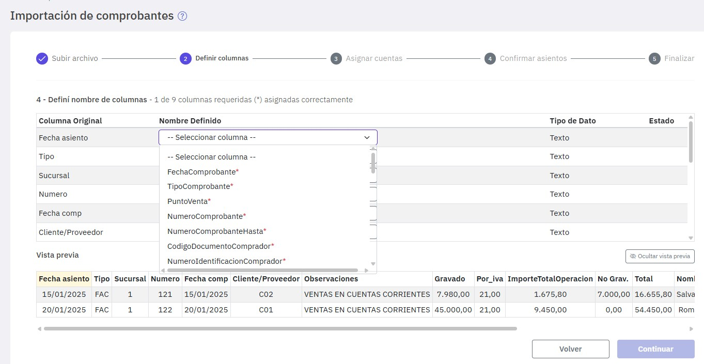
Observá que bajo el título "Columna Original" se exhiben los campos del archivo que vas a importar, a cada uno de ellos en la columna "Nombre Definido" tenés que indicar el dato que le corresponde en Easysoft, si la asignación es correcta se exhibe un ícono verde.
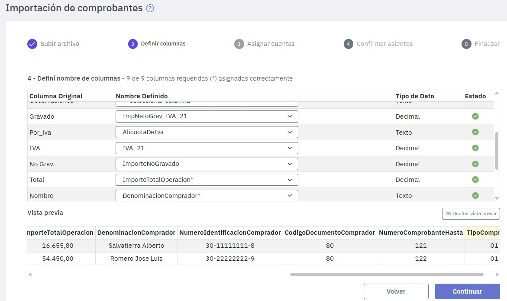
En caso que al realizar la asignación se cometa un error se muestra un ícono de color rojo. Posicionándose arriba del mismo se exhibe un mensaje detallando el error. En ese caso, revisá tu archivo, corregilo e intentalo nuevamente.
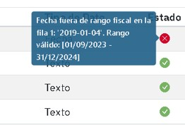
Una vez realizada la asignación en forma correcta, presioná "Continuar" para asignar cuentas contables en los casos que corresponda.
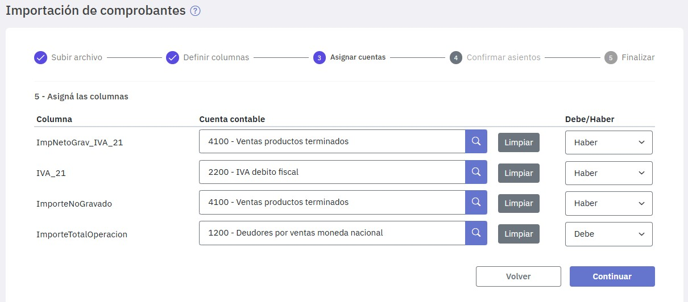
También tenés que indicar si cada cuenta va al debe o al haber en los asientos que se van a generar. Esto es muy importante ya que depende de esa elección si los asientos van a balancear o no.
En caso de que los asientos no balanceen, se exhibe un aviso detallando el error.
Si las cuentas balancean se habilita el botón "Continuar" accediéndose al paso "Confirmar asientos".
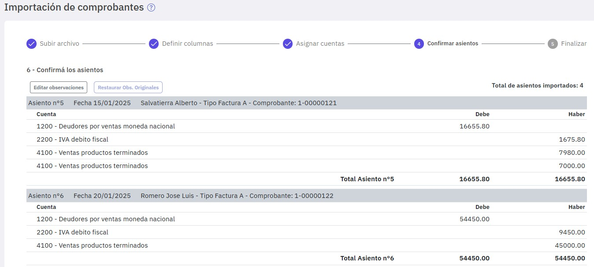
Se muestran los asientos generados correspondientes a los comprobantes importados, pero aún no confirmados.
Los asientos se numeran automáticamente a partir del último número registrado en el subdiario elegido. En caso que al guardar se repita un numero de asiento, se exhibe un error y se sugiere autoasignar el número de asiento.
Si haces clic en "Editar observaciones" podés modificar las observaciones de los asientos. Las modificaciones pueden afectar a todos los asientos o solamente a los que indiques. Una vez modificadas, si querés volver a las observaciones originales presioná "Deshacer", para confirmarlas presioná "Aplicar". Una vez aplicadas, si queres volver a las observaciones originales presioná "Restaurar Obs.Originales".
Ya estás en condiciones de incorporar los asientos al subdiario, para ello presioná "Guardar".
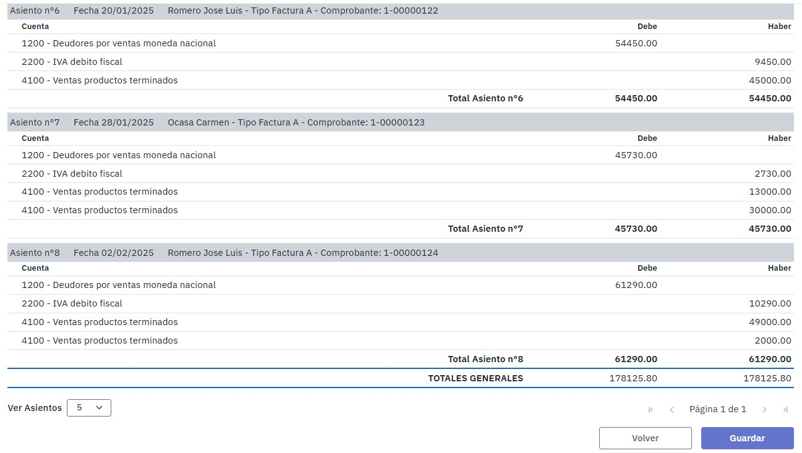
Por último, al presionar "Guardar", se finaliza el proceso.
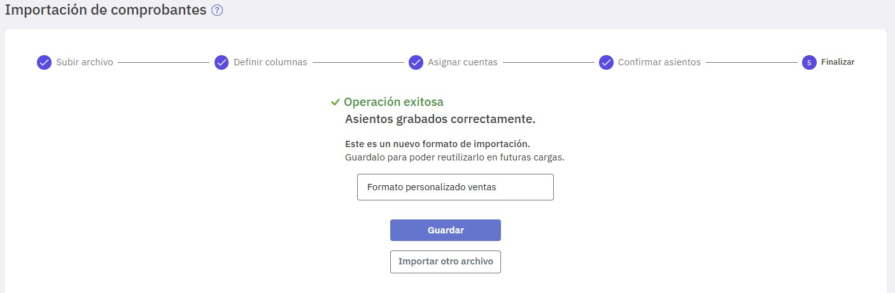
En esta etapa ya se encuentran incorporados los comprobantes y asientos al sistema y se ofrece la posibilidad de guardar el formato que definiste en los pasos anteriores para que, en futuras importaciones, puedas volver a utilizarlo. En este ejemplo lo llamamos "Formato personalizado ventas". Para grabarlo presioná "Guardar".
Por último, podés repetir el proceso para importar otro archivo.
En caso que tengas que volver a utilizar el formato para realizar otra importación, seleccioná el mismo en el campo "Formatos".
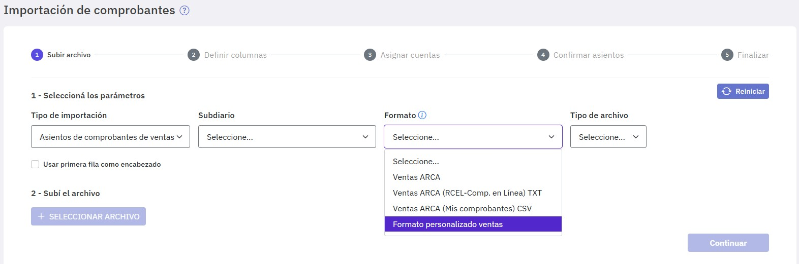
Si tuvieses que importar un archivo con un formato similar a uno existente, por ejemplo a este que definiste, podes seleccionar dicho formato, subir el archivo, modificar las asignaciones de columnas que correspondan y, al finalizar, grabar el formato con otro nombre. De esta manera, conservás el formato original que usaste de base y generas un nuevo formato correspondiente al archivo importado.
Para tener en cuenta
Al realizar la importación pueden presentarse algunos inconvenientes, en Inconvenientes al importar comprobantes te detallamos algunos de ellos .